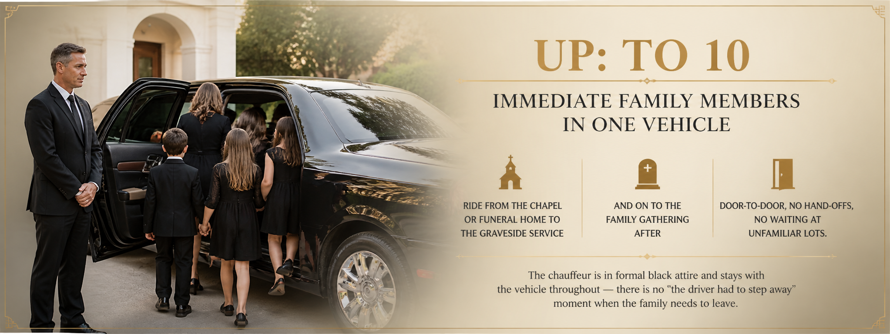
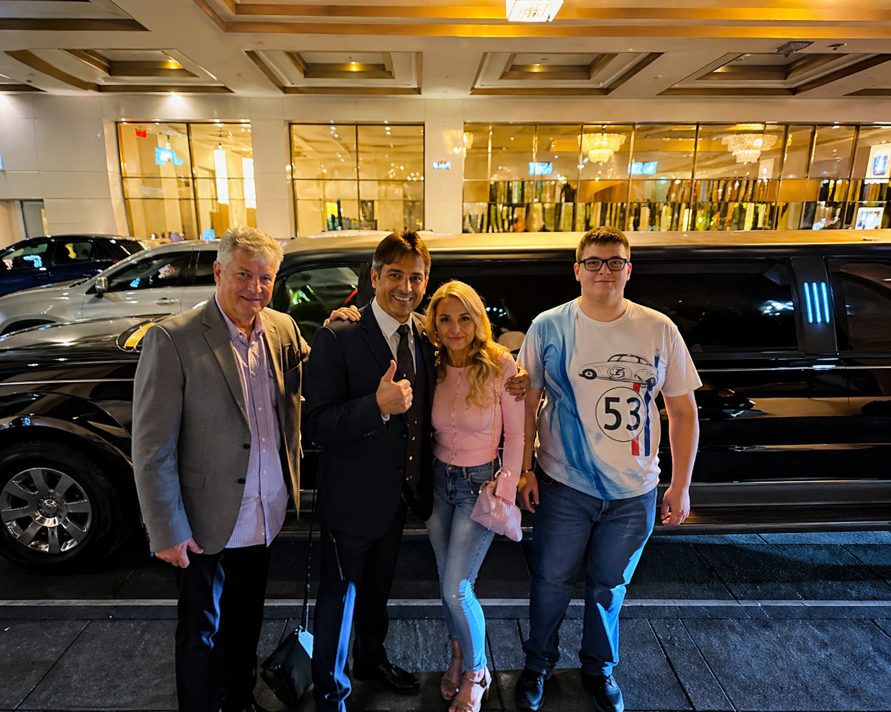

Quiet, dignified family transport. Coordinated directly with the funeral home.
High Class Limousine Services provides funeral limousine service across Vernal and the Uintah Basin, coordinated directly with local funeral homes including Phillips Funeral Home and Blackburn Mortuary. Up to 10 family members ride together from service to graveside and back. $135–$200/hr (3-hour minimum); most funeral bookings $400–$700 total. We do not surge-price funerals. Short-notice bookings prioritized. Call (435) 219-9447.
A funeral is not a logistics problem. But it has logistics — somebody has to drive the family from the service to the graveside, somebody has to coordinate with the funeral home, somebody has to make sure the immediate family rides together rather than getting scattered across four cars and three different routes. We handle that part. Quietly. Professionally. With the kind of dignity the day requires.
High Class Limousine Services provides funeral limousine service across Vernal and the Uintah Basin. We coordinate directly with Vernal-area funeral homes, integrate cleanly into the procession, and dress and behave to the standard the moment deserves. Call (435) 219-9447 — we'll arrange the rest.

Up to 10 immediate family members in one vehicle, riding from the chapel or funeral home to the graveside service and on to the family gathering after. Door-to-door, no hand-offs, no waiting at unfamiliar lots. The chauffeur is in formal black attire and stays with the vehicle throughout — there is no "the driver had to step away" moment when the family needs to leave.

We work directly with Vernal-area funeral homes including Phillips Funeral Home and Blackburn Mortuary. The funeral director can hand off the timing and routing directly to us — most families don't have to think about transportation logistics at all. We integrate into the procession at the position the funeral home directs, follow the route at procession speed, and handle the graveside arrival with care.
For out-of-town family members arriving from SLC International, we can also handle airport pickups so the family is together from arrival forward.
Funeral limousine service in Vernal runs $135–$200 per hour with a 3-hour minimum. Most funeral bookings cover the service, procession, and a return trip — typically $400–$700 total. We do not surge-price funerals. We do not add complexity charges for processions. The rate is the rate.
For families also needing airport pickups, hotel transfers, or transportation for elderly relatives across multiple days, we'll quote a multi-day package. Call (435) 219-9447 directly for the day's logistics — we'll prioritize the booking.
$135–$200/hr (3-hour minimum). Most funeral bookings: $400–$700 total covering service, procession, and return.
Yes — Phillips Funeral Home, Blackburn Mortuary, and other Vernal-area providers. The funeral director can coordinate directly with us so the family doesn't have to.
Up to 10 passengers — typically the immediate family, riding together from service to graveside and back.
Yes. We prioritize funeral bookings and will rearrange our schedule when possible. Call (435) 219-9447 directly for urgent requests rather than emailing.
We can handle airport pickups (SLC International, Vernal Regional, Grand Junction) so out-of-town family arrives at the service together. Coordinate it all on one booking.
Tell us the date. We'll handle the rest.